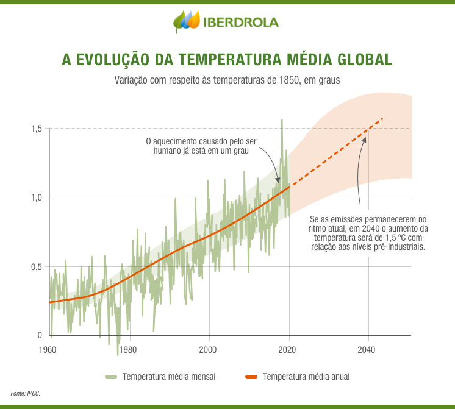

What are Urban Heat Islands?
Urban heat islands are metropolitan areas that are significantly warmer than their surrounding rural areas. This phenomenon occurs due to the concentration of structures and energy use in cities, leading to increased temperatures compared to less developed regions.

What is our Technology?
Our technology is based in a Rainy Drone that uses one AI sensor to monitor the Urban Heat Islands and simplely rain in some hot areas and to help for the grown of green areas.

Why are cities getting hotter?
- Reduction of green areas
- Use of concrete and asphalt that absorb heat
- Air pollution and vehicle emissions

How can we combat heat islands?
- Green roofs
- Tree planting and increasing green spaces
- Encouraging public transportation to reduce emissions

Benefits of addressing urban heat islands
- Improving public health by reducing respiratory diseases and heat stress
- Reducing energy consumption in urban areas
Example: São Paulo
São Paulo is addressing heat islands through initiatives like increasing green areas and green roof projects.
These efforts aim to mitigate the urban heat island effect and improve the quality of life for its residents.
Interesting Facts about Heat Islands
- Heat islands can increase urban temperatures by up to 10°C compared to rural areas
- Cities like New York and Tokyo are among the most affected globally